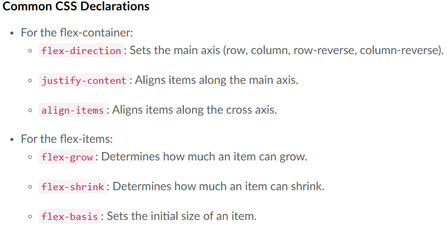
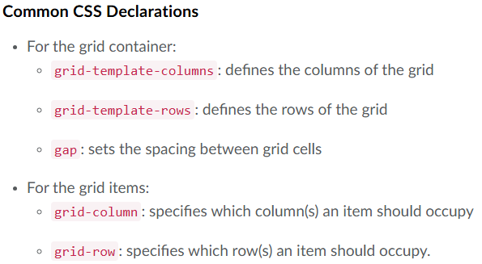

Labs 1, 2 & 3.
This is my example HTML page. This is my official HTML page published after learning from module 1 and 2. I find HTML to be very entretaining, its just like when you're learning something that you really love, time pass by so fast when I'm working on this documents.
What I Learned
-
Common page structural or simantic elements. Such as:
- <html>
- <header>
- <footer>
- <main>
- <article>
- <section>
- <nav>
- <aside>
-
Difference between local and remote files:
- Local files stays in your computer and they can be accessible offline.
- Remote files are located in the cloud, in another online server. They can be accessible via internet/wifi connections.
List and definitions of these web standards and protocols:
- TCP: the Transmission Control Protocol - Standard way of formatting packets.
- IP: the Internet Protocol - Standard way of assigning addresses, without confusion.
- HTTP: the HyperText Transfer Protocol - Used to read documents with hyperlinks.
This website is very helful, this is where I learned eveything I've written in this page:
This is my example of linking my email with heperlink:
Learning CSS on Module 03 - Lab 03
In this module we learned the basics of Cascading Style Sheets (CSS)There are 3 ways you can apply CSS to your HTML files:
- Inline: In which you use the style inside the HTML element. Just like used in THIS line.
- Internal: We use the <style> element in the <head> section.
- External: We use the <link> element to link to an external CSS file.
CSS selectors and examples (from w3schools website):
- Element Selector: This is an example that all <p> elements on the page will be center-aligned, with a red text color.
p {
text-align: center;
color: red;
}
- Class Selector: In this example all HTML elements with class="center" will be red and center-aligned.
.center {
text-align: center;
color: red;
}
- ID Selector: the ID Selector uses the id attribute of an HTML element to select a specific element. The CSS rule below will be applied to the HTML element with id="para1":
#para1 {
text-align: center;
color: red;
}
I implemented these techniques in this HTML document, I also incorporated an external CSS file. if you want to try this examples, this is a link to the "Try it yourself" examples on 'W3Schools' to have a look to at each of these examples!
Lab 05 - Layout
In this module we learned about Grid and Flexbox Layouts:
CSS FLEXBOX LAYOUT

CSS Flexbox is a layout model that makes it easier to design flexible and responsive layouts. Flexbox allows you to easily align and distribute space among items in a contain even when the size is unknown or dynamic.
You need two main pieces to create a flex design:
Flex container (parent)
Create a flex container on the parent element using display: flex;
Flex Items (children)
Items inside the parent container set to display: flex; automatically become flex items.
CSS GRID LAYOUT

CSS Grid Layout is another powerful layout system for web design. Grid Layout allows you to create two-dimensional layouts (rows and columns). It's ideal for designing entire page layouts or complex components as grid items can be placed precisely in the grid.
Similar to Flexbox, you need two main pieces to create a flex design:
Grid container (parent)
Create a grid container on the parent element using display: grid;
When to Use Flex or Grid
Use Flexbox for:
- Navigation menus
- Card layouts
- Centering content
- Simple rows or columns of content
Use Grid for:
- Overall page layout
- Complex component layouts
- Image galleries
- Any design requiring precise 2D alignment